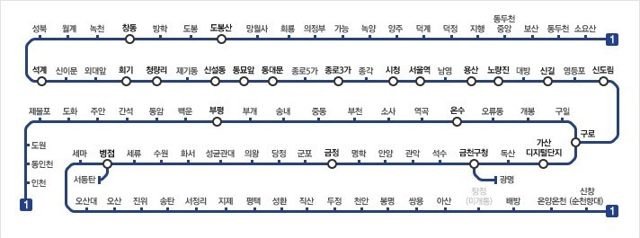

1974년 8월 15일에 서울전차를 대체하여 개통된 대한민국 최초의 광역전철이다.
경인선, 경부선 등 국철 노선들과 직결되어 경기도 동두천시의 소요산역부터 인천광역시의 인천역, 충청남도 아산시의 신창역까지 총 길이 200.6km의 수도권 전철 중 가장 긴 노선이다.
서울 지하철 1호선 구간은 과거 서울특별시에서 비공식적으로 종로선이라 한 바 있으며, 지금도 몇몇 철도 동호인들은 종로선이라는 명칭을 사용한다.
노선색은 남색이지만, 열차 도색은 빨간색이다.사실 예전 종로선 시절에는 노선의 색이 빨간색이었다가 국철과 1호선이 통합되면서 변경된 것인데, 그것을 차량에 아직 적용하지 않은 것이다. 간단하게 지하구간은 서울교통공사, 지상구간은 한국철도공사다. 열차 통행방향은 모두 좌측통행이다.
그 규모에 걸맞게 준사고 등으로 인한 대규모 지연이 잦고, 운행 중단과 인명 사고가 상당히 많이 발생하는 노선이다. 이용객 수, 운영하는 열차 빈도 수가 워낙 많을 뿐만 아니라 꽤 노후된 차량들이 많고 지상 구간이 대부분이라 한파나 폭염에 취약하다. 또 개통한 지 가장 오래되었고 한때 스크린도어가 없는 역이 대부분이었던 탓도 있다. 하지만 2021년 11월 기준 스크린도어가 없는 역이 별로 없다. 기껏해봐야 광명역과 천안역. 창동역의 경우 민자역사 공사가 거의 10년 이상 멈춰있던 상태라 코레일 역사 보수를 진행하는 것도 불가능했기 때문에 설치가 지연되었지만, 2021년 하반기에 설치 완료되었다. 다만 천안역은 창동역과 비슷한 이유로 스크린도어 공사를 못하고 있는데, 이쪽은 아예 공사를 시작하지도 못했다.
또한 경부선이나 경부고속선은 일반열차와 선로를 공유하므로 시간표 변경이 대단히 잦은 편이다. 급행열차나 광명셔틀 등은 반드시 시간표를 확인해야 하며, 레츠코레일 홈페이지에서 Microsoft Excel 파일 형태의 시간표를 받는 것이 가장 정확하다. 그 다음은 카카오맵.